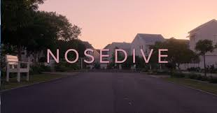
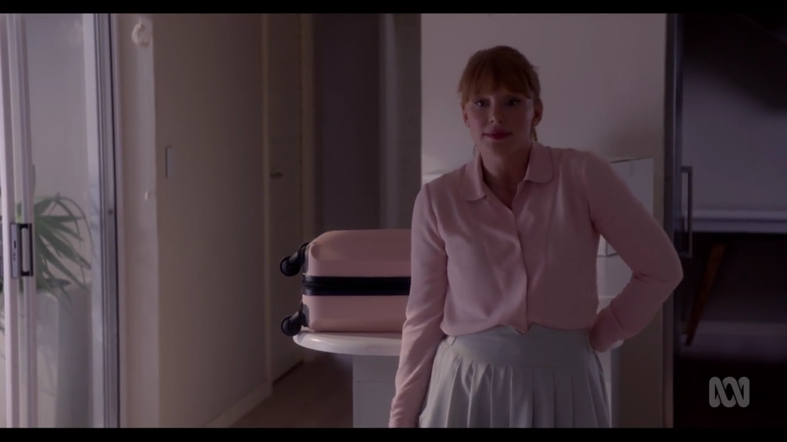
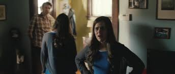
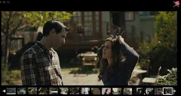
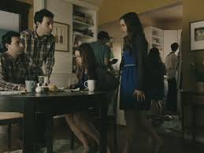
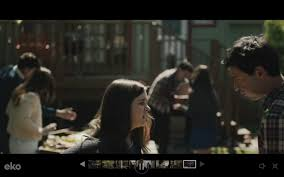
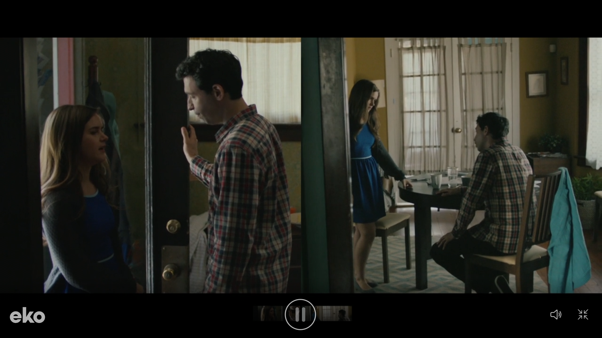
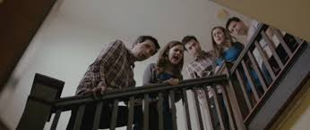

'Nosedive,' directed by Joe Wright, depicts a society where a rating system controls social status, self-worth, and access to services. This system impacts people’s everyday life and interactions, as ratings are embedded into our mindsets, trapping us in a superficial society. This reflects our current interaction with social media technologies, and the impact they have on bringing unrealized events into the modern world.
In ‘Nosedive,’ every interaction is rated via mobile devices, impacting individuals’ lives significantly, ranging from the use of facilities or the consumption of goods, the rating of someone will affect the quality or quantity as shown in the airport scene where she cannot rent a normal car and has to use a beat down, older model. This real-time feedback loop exemplifies how pervasive technology shapes social behavior and impacts status and our opportunities in society.
Wright’s portrayal shows how technology-driven validation leads to superficiality and stress, creating a high-pressure environment where authenticity is sacrificed for social approval this is shown through many examples where the main character, Lacie, is seen altering how things look and seem so people think she is doing something else. For example, she took a strategically placed bite of a cookie and carefully placed it where it is most “aesthetic” to take a photo for social media, attempting to show how “perfect” her life is, ultimately trying to boost her rating and social status.
Through augmented reality interfaces and a pastel colour palette, Wright emphasises the artificial nature of the characters’ lives, underscoring the disconnect between online personas and reality, for example in the scene where Lacie prepares for her friend’s wedding, the pastel colours and augmented reality interactions highlight her obsession with maintaining a perfect online persona. The artificiality is further emphasised when Lacie practices her speech using a virtual audience, which starkly contrasts with her real-life interactions, showing how much she relies on digital validation.
‘Nosedive’ critiques our reliance on social media for validation, urging viewers to reflect on their digital interactions and the potential loss of genuine human connections due to the excessive use of social media. For instance, Lacie’s descent into desperation as her rating plummets illustrates the precariousness of basing one’s self-worth on online approval. Her interactions become increasingly hollow and strained as she prioritises ratings over authentic connections, ultimately leading to her breakdown at the wedding, symbolising the collapse of her constructed digital identity.
‘Possibilia,’ directed by Daniels, is an interactive film that explores multiple parallel universes through modern communication technologies, offering a dynamic viewing experience. The film’s narrative structure allows viewers to navigate through various outcomes of a couple’s breakup, reflecting the different paths their relationship could take based on their choices, thus making the audience an integral part of the storytelling process.
The film allows viewers to influence the narrative by making choices, transforming them into active participants. This interactive format is made possible by advanced web-based technologies. For example, during a pivotal argument scene, viewers can choose how the characters respond to each other, which directly alters the direction of the story, demonstrating how interactivity can deepen engagement and investment in the narrative.
‘Possibilia’ presents a couple’s breakup across parallel universes, illustrating the infinite outcomes of a single decision. The seamless transitions between different universes highlight the fluidity of reality. In one universe, the couple might part amicably, while in another, they could end in a bitter dispute. These multiple pathways underscore the complexity and unpredictability of human relationships, emphasising how small choices can lead to vastly different outcomes.
Daniels use a user-friendly interface to switch between storylines effortlessly, ensuring technology enhances the narrative rather than detracting from it. The interface allows viewers to click on different choices seamlessly, making the transitions between universes smooth and intuitive. This design ensures that the technology serves the story by allowing viewers to focus on the narrative rather than on how to navigate it.
The film delves into themes of choice and consequence, with the interactive format allowing viewers to experience the emotional weight of decisions, deepening their connection to the story. For example, as viewers navigate the couple’s arguments and reconciliations, they gain a deeper understanding of the impact of each decision, fostering empathy and introspection about their own choices in life.
Utilising split screens and visual effects, Daniels maintain coherence across multiple storylines, showcasing their technical expertise and enriching the viewing experience. The split screens allow viewers to see different outcomes simultaneously, creating a layered and complex narrative experience. This technical mastery ensures that despite the film’s interactive nature, the storytelling remains clear and engaging.
By integrating modern technologies, ‘Possibilia’ engages viewers in a participatory experience, prompting reflection on personal choices and possibilities. The interactive format encourages viewers to think about the ‘what ifs’ in their own lives, as they see the consequences of different choices unfold in the film. This engagement extends beyond the screen, encouraging viewers to reflect on their own decision-making processes and the potential outcomes of their choices.
Both ‘Nosedive’ and ‘Possibilia’ demonstrate the profound impact of modern communication technologies on storytelling. They challenge us to consider the implications of our digital interactions and the potential of interactive media. ‘Nosedive’ highlights the dangers of social media dependency, while ‘Possibilia’ showcases the possibilities of interactive storytelling, illustrating how technology can both reflect and shape our understanding of human experiences.
As we explore the intersection of technology and storytelling, these works remind us of the power of narrative to reflect and shape our understanding of reality in a digital world. They serve as poignant reminders of the potential and pitfalls of digital technologies in our lives, encouraging us to use these tools thoughtfully to enhance rather than detract from our human connections and storytelling traditions.